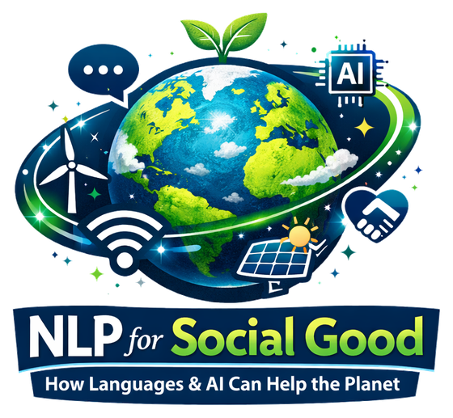
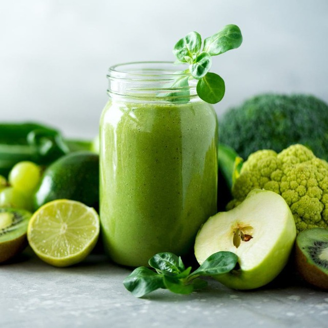
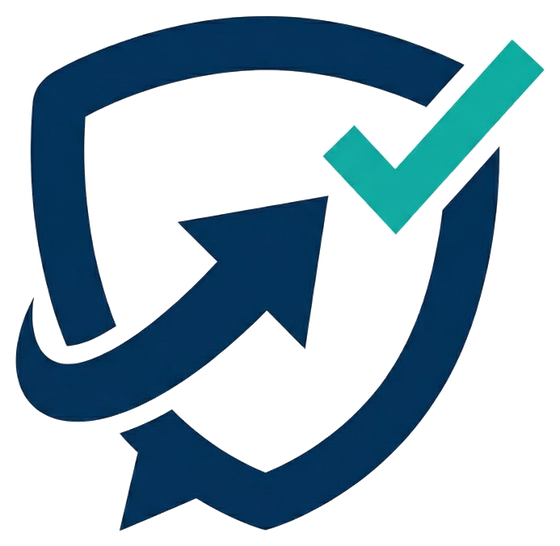
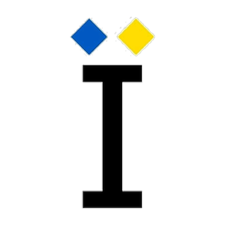
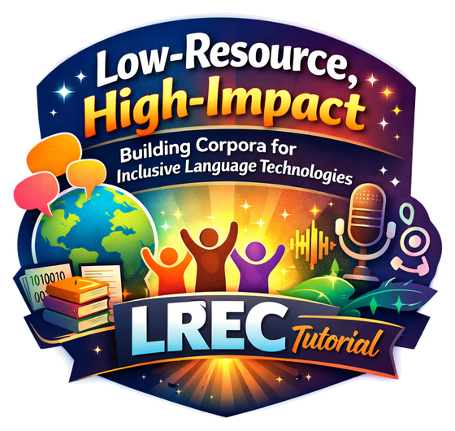

May 2026
Tutorial
Tutorial
Tutorial at LREC 2026: “Low-Resource, High-Impact”
A hands-on tutorial on building corpora for inclusive language technologies — from data collection to model training for underrepresented languages.
I'm a postdoctoral researcher at the Technical University of Munich, working on trustworthy AI evaluation and multilingual, low-resource language technologies. My research combats harmful content online — toxicity, hate speech, and misinformation — while advancing the democratisation of language technologies for underrepresented languages, including Ukrainian. I hold a PhD from Skoltech and have authored 50+ peer-reviewed papers, including several position papers on NLP for Social Good, recognised with the ACL 2025 Best Resource Paper Award and by UNESCO. I also organise the NLP for Positive Impact workshop and the TextDetox and LLMs with Limited Resources shared tasks.
A hands-on tutorial on building corpora for inclusive language technologies — from data collection to model training for underrepresented languages.
Our large position paper and survey of challenges, opportunities, and responsible deployment of language technologies for positive social impact.
A seminar on ethics, fair data collection, AI for Social Good, and designing technology for people.
Training LLMs with limited data and compute for Upper Sorbian, Lower Sorbian, and Ukrainian — jointly evaluated on MT and QA.
Human-annotated emotion recognition datasets for 28 languages, primarily low-resource languages from Africa, Asia, Eastern Europe, and Latin America.

Survey of nine domains where NLP can serve society, plus the annual NLP for Positive Impact workshop.
Learn more →
Parallel detoxification corpora, models, and shared tasks — over 2M downloads by the community.
Learn more →
Connecting regulations, platform policies, and NLP datasets towards unified mitigation.
Learn more →
Datasets and models for toxicity, formality, NLI, and emotion detection in Ukrainian.
Learn more →
WMT shared task on limited-resource LLMs and an LREC tutorial on inclusive corpora.
Learn more →